Train stock-ranking models on the local data library (./data), walk-forward
Question: using only price and volume, can a model rank stocks by how much they will beat the average stock over the next month (21 trading days)?
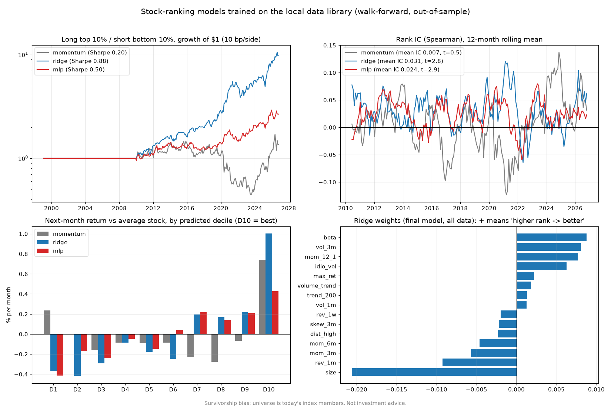
Trading algorithms, market scans and forecasts, each tested on past data and reported honestly.
Educational research, not financial advice. Charts describe the past and statistical forecasts; most of the forecasts here did not beat simple baselines, and the reports say so.
Question: using only price and volume, can a model rank stocks by how much they will beat the average stock over the next month (21 trading days)?

The script remembers its work in nvidia_learning.json. On every run it:
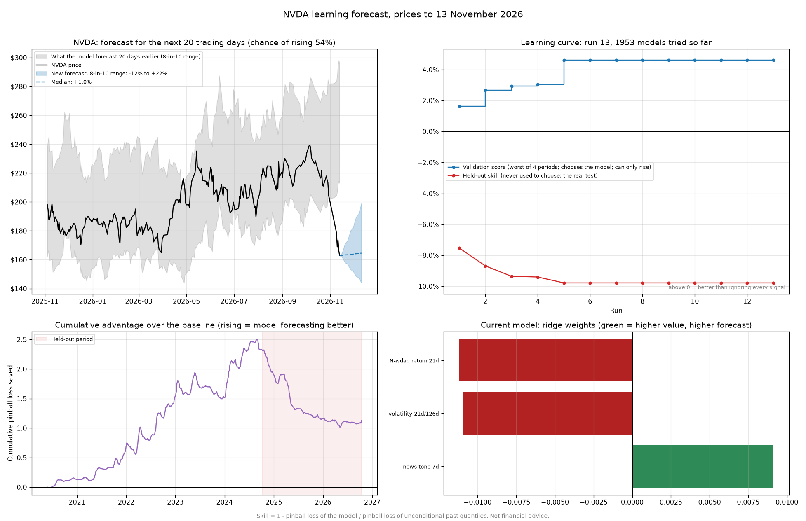
The sector is the Industrial Select Sector SPDR fund (XLI). The companies are 36 large US industrials with a long price history.
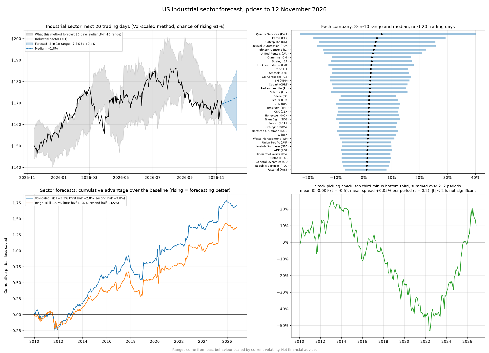
Four studies on twelve ETFs (stocks, bonds, credit, gold, commodities, property):
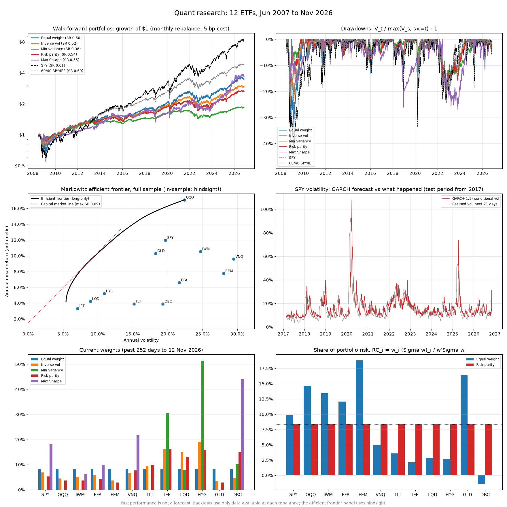
One panel per sector, showing how $1 invested grew (dividends included) against the S&P 500, plus a panel ranking the sectors by yearly return. Each sector is its SPDR sector ETF. A sector whose fund is younger than the period is drawn from the fund's first day, with the S&P 500 restarted there.
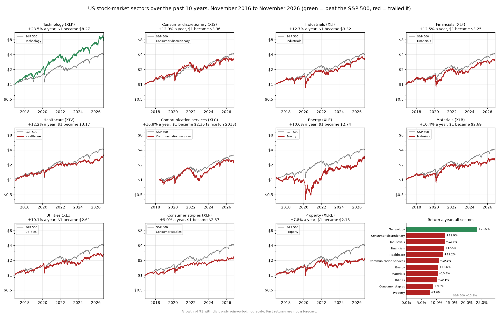
Each bond market is an ETF. For every fund the scan shows: - yield: the income it pays per year, as reported by Yahoo Finance - returns over 1, 3, 6 and 12 months, interest included - score: the average of the 3-, 6- and 12-month returns (recent strength) - volatility: how much the price moves, a measure of risk - whether the price is above its 200-day average
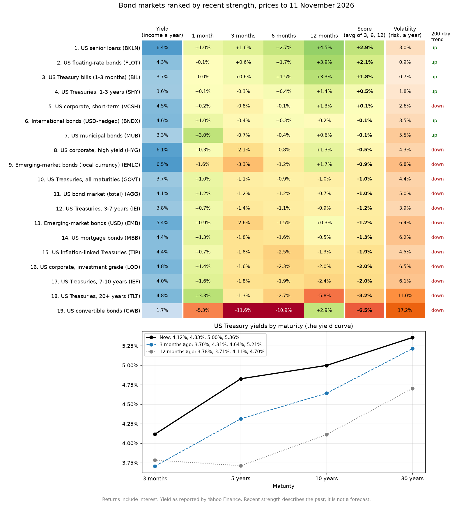
Rule, applied every 14 days: 1. Score each coin by the average of its 14-day and 28-day price change. 2. If Bitcoin is below its 50-day average, hold nothing (cash): when the whole market is falling, most coins fall with it. 3. Otherwise hold the 5 highest-scoring coins in equal amounts for 14 days.
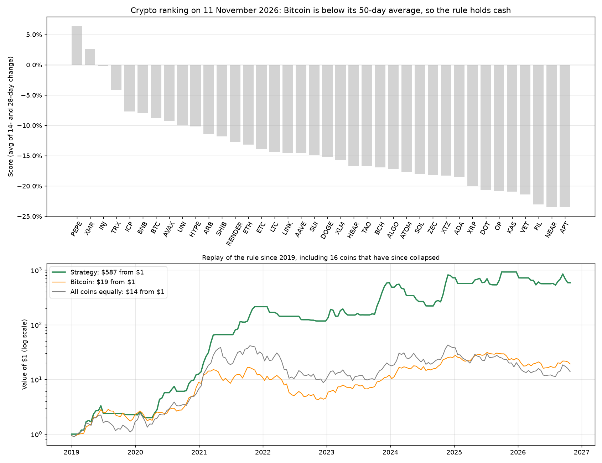
Each market is an ETF. The score is the average of its 3-, 6- and 12-month returns (the measure the "Leaders" strategy in combined_algo.py uses). Strength is a description of the recent past, not a forecast.
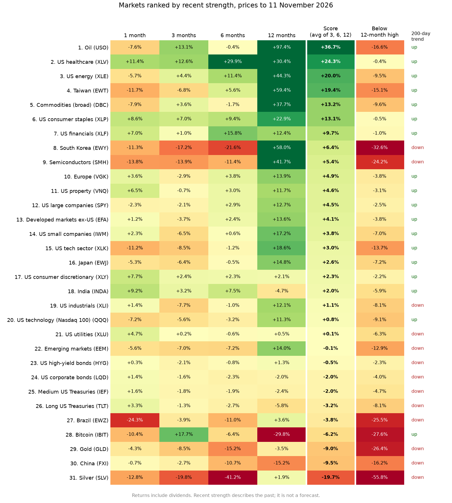
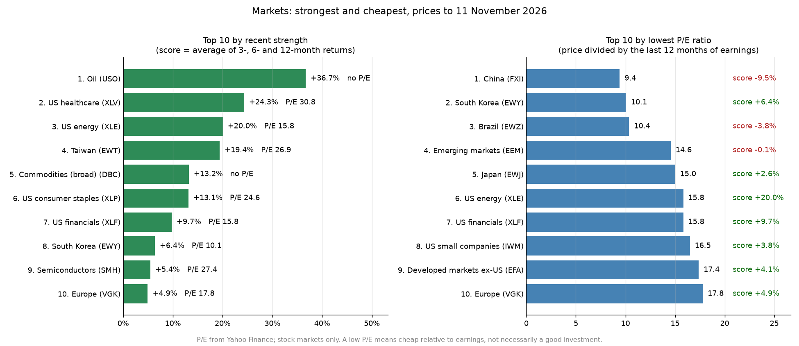
News data: the GDELT project reads worldwide online news and publishes the average tone (positive or negative wording) of each day's English-language articles mentioning Nvidia, back to 2017.
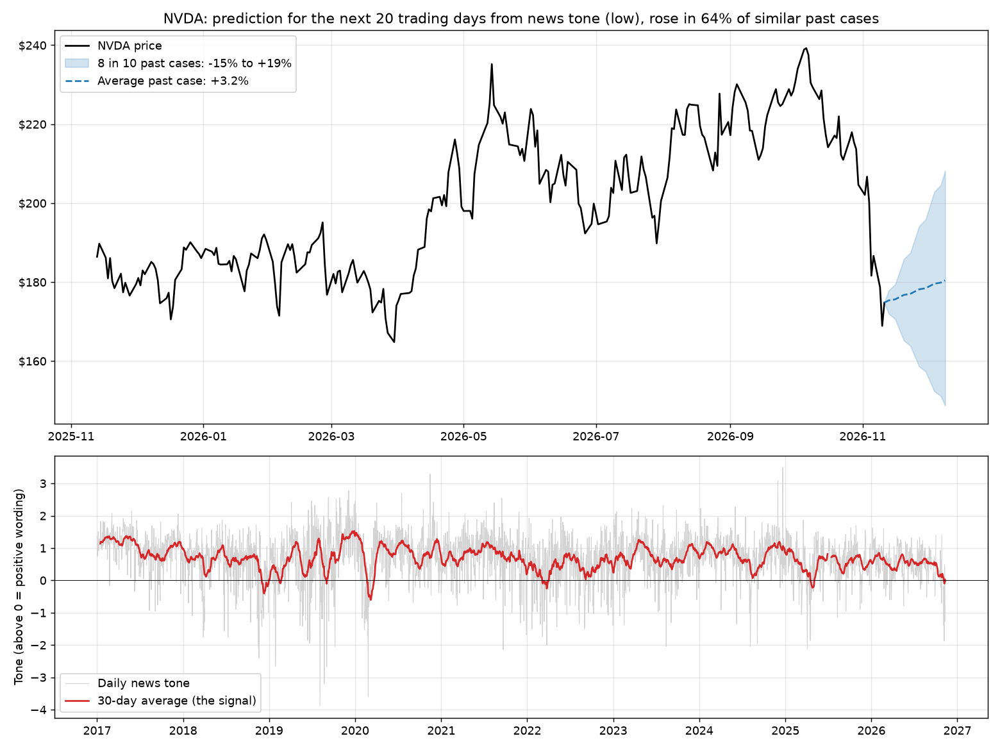
Draws the trained algorithm (trained_algo.py), the combined multi-strategy algorithm (combined_algo.py) and the two moving-average crossovers (trading_algo.py) over the same period, alongside buying and holding the S&P 500 (SPY, dividends included). Everything pays the same trading cost and earns the Treasury-bill rate on cash.
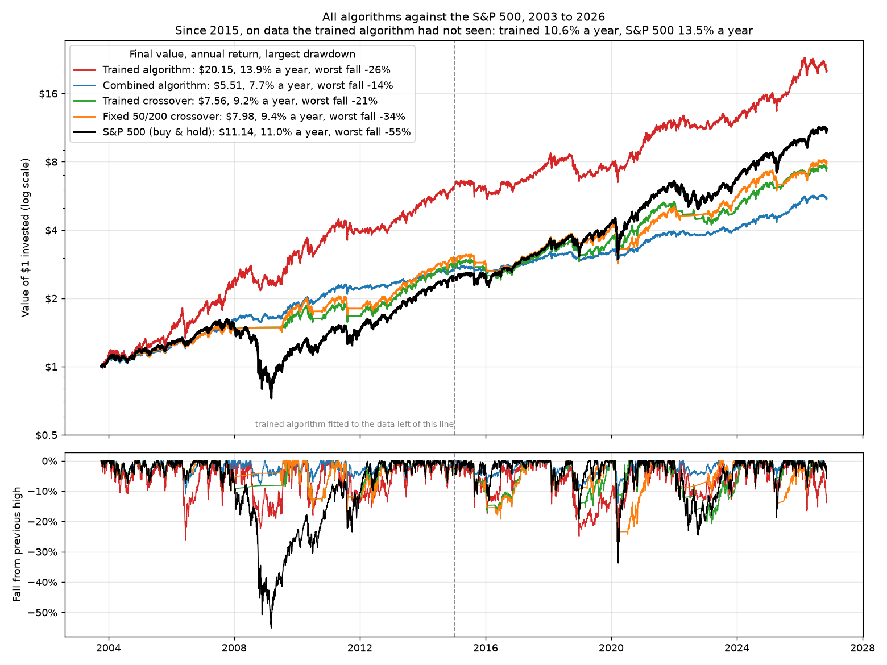
Four strategies each decide how much of ten ETFs (stocks, bonds, gold, commodities, property) to hold. Their allocations are averaged, and whatever is not invested sits in cash.
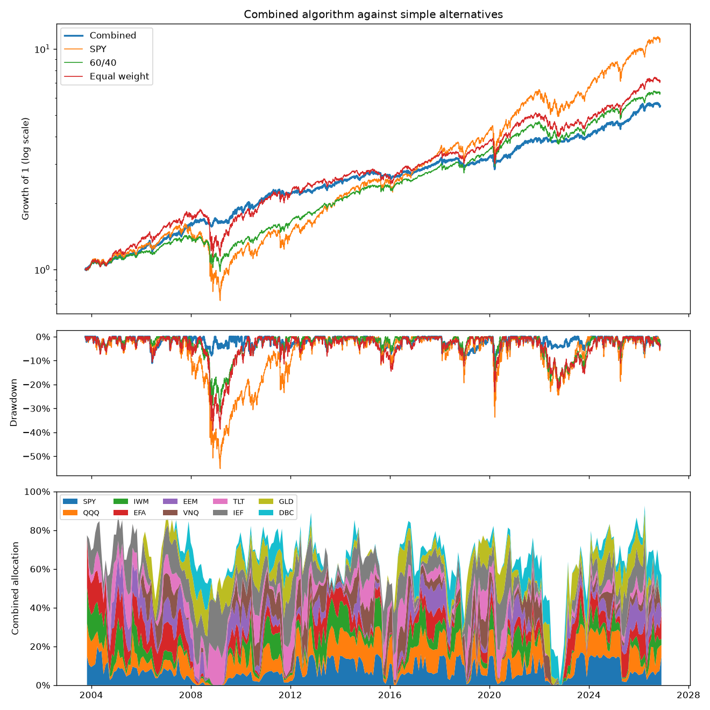
Rule: hold the asset while the fast moving average is above the slow one, otherwise stay in cash.
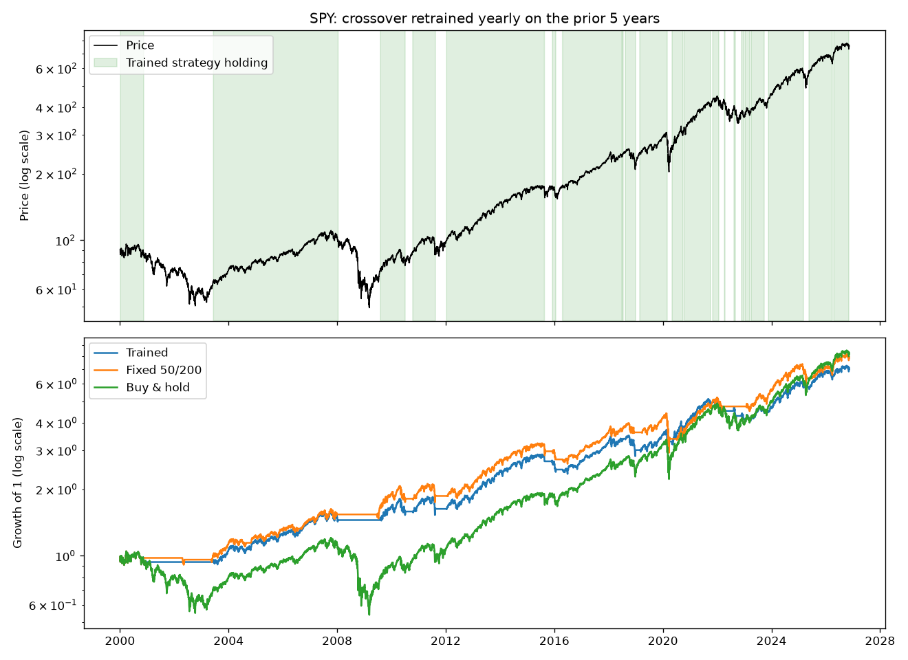